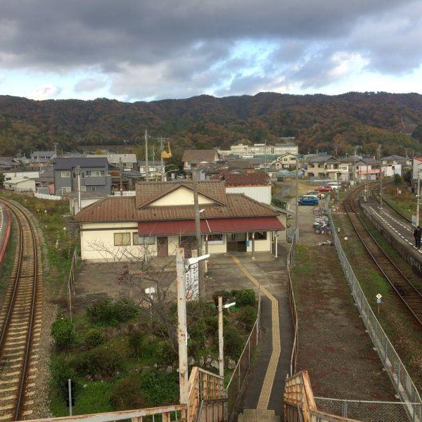
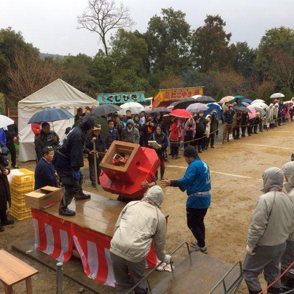
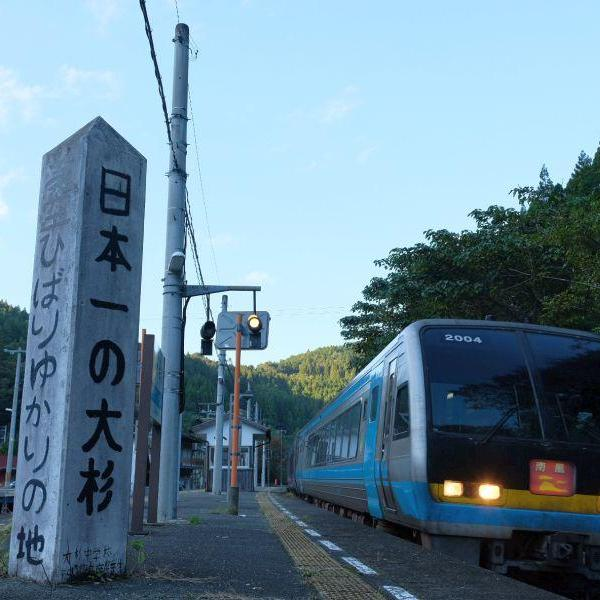
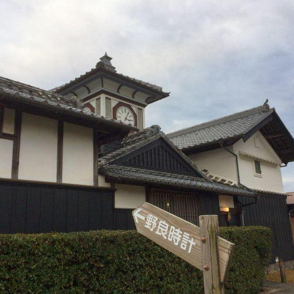
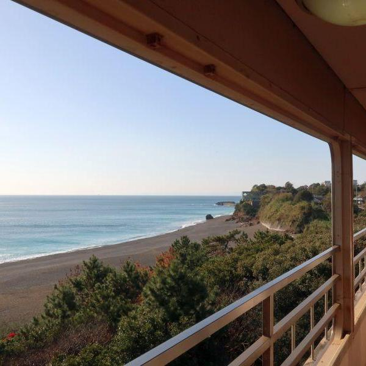
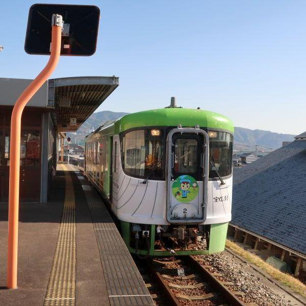

四国のおすすめ観光スポットをご紹介
2019年1月アーカイブ
-
 公共交通機関
列車乗換駅で見ることが出来る今昔・前編 < 池谷駅 / 徳島県鳴門市 >
-
 四国八十八ヶ所
阿波最古と噂される古刹に集まる力自慢たち < 大山寺 / 徳島県上板町 >
-
 公共交通機関
静かな無人駅で、みどころを見つける旅 < 大杉駅 / 高知県大豊町 >
-
 歴史
100年以上の時を刻み続けて来た、手作りの時計 < 野良時計 / 高知県安芸市 >
-
 公共交通機関
雄大な太平洋を存分に楽しむことができるローカル線・後編 < ごめん・なはり線 / 高知県東部 >
-
こえび隊
大島青松園で交流イベント <香川県・大島>
-
 公共交通機関
雄大な太平洋を存分に楽しむことができるローカル線・前編 < ごめん・なはり線 / 高知県東部 >